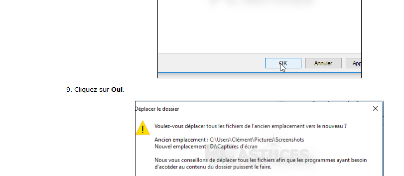
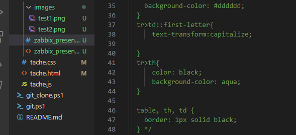

02/11/2021
========================================================================================================
Présentation de Zabbix
========================================================================================================
Quelques définitions
- élements/item: une collecte, une métrique
- application : regroupement logique d'éléments
- Déclencheur/Trigger : expression d'un problème
- Hôte/Host: équipement à surveiller
- groupe d'Hôtes/Host group : ensemble d'hôtes
- modèle/template : conteneur de différents types d'objet( éléments,applications,déclencheurs, graphiques....
pour
faciliter le déploiement)

========================================================================================================
TOP 10: Logiciels de monitoring (gratuit ou payant)
========================================================================================================
